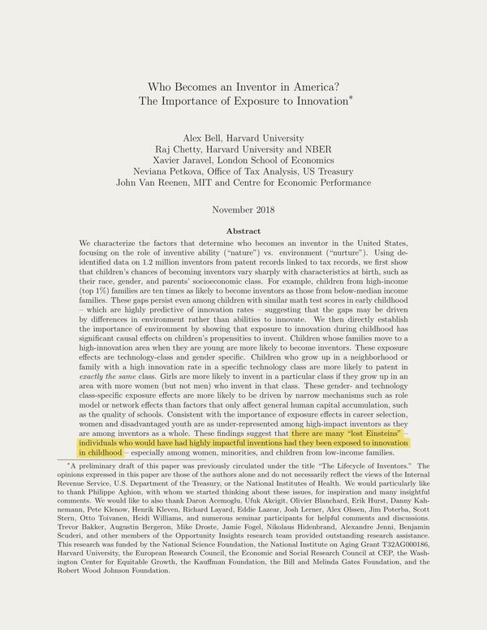
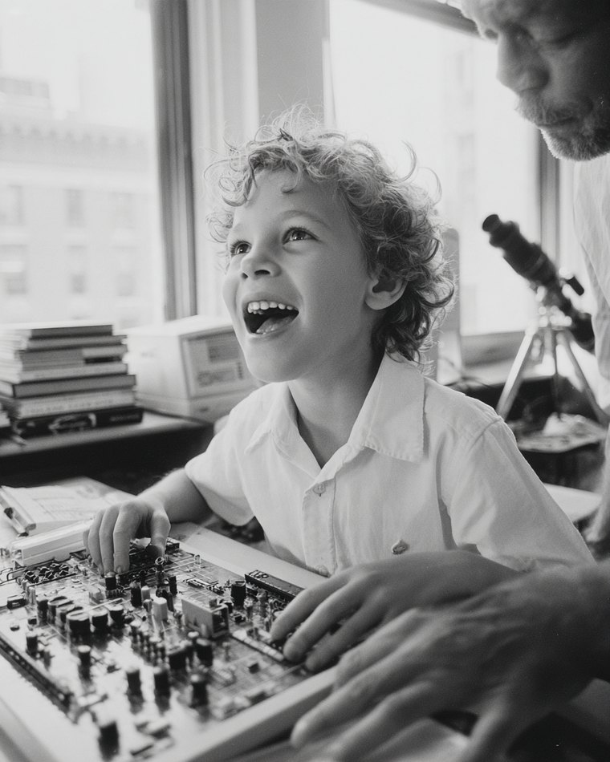

Growth comes from innovation, and innovation needs a wide pool of talent.

Quarterly Journal of Economics, 2019. Bell, Chetty, Jaravel, Petkova and Van Reenen, “Who Becomes an Inventor in America?”. Highlighted: the “lost Einsteins”.
Same maths score, half the chance of inventing
New York City public schools, children born 1979–85.
Both children: top 5% in maths at age 8.
Poorer familybelow 80th income percentile
=

Richer familyabove 80th income percentile
Among children in the top 5% in maths, those from richer families become inventors 2.1 times as often.
Why this matters for growth
Growth comes from innovationInnovation is a central source of economic growth (p. 1).
Ability at birth is similarMaths ability at birth would explain only 5.7% of the gap in inventing between rich and poor children. The gap grows during childhood (p. 16).
4×
Four times as many inventorsIf women, minorities and children from low-income families invented at the rate of white men from high-income families, the US would have four times as many inventors (p. 34).
Social protection is an investment in future growthIt gives children from poor families an equal chance to develop their talent.
Source: Bell, A., Chetty, R., Jaravel, X., Petkova, N. and Van Reenen, J. (2019). Who becomes an inventor in America? The importance of exposure to innovation. Quarterly Journal of Economics 134(2): 647–713. Chart points read from Figure IVa. Pages refer to the accepted manuscript (LSE Research Online).
Photos are AI-generated illustrations (Midjourney), not study participants.